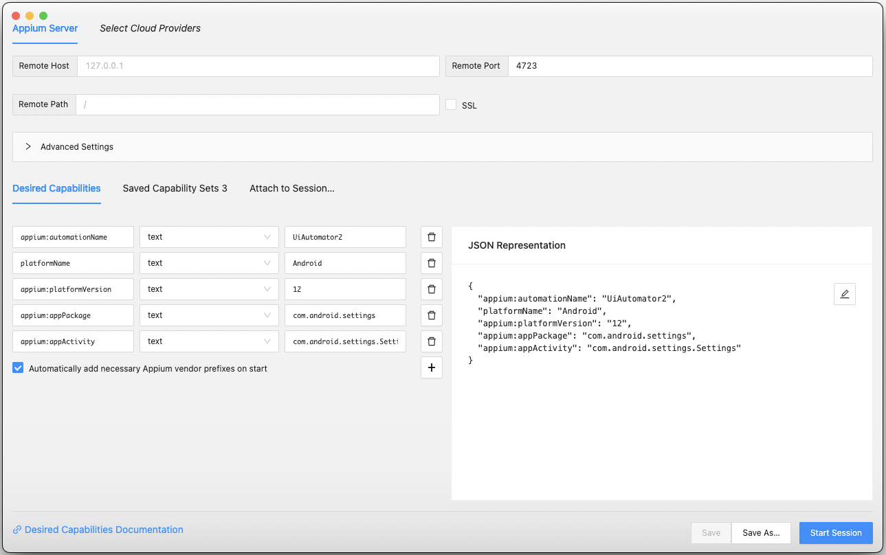
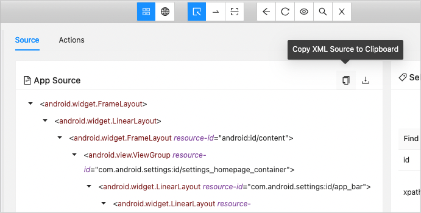
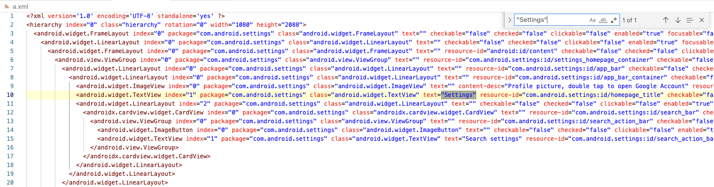

Using Appium Inspector
When you want to create screen nickname files, use Appium Inspector for inspecting element information.
Install
- Get install package from appium/appium-inspector.
Appium-Inspector-mac-202x.x.x.dmg(for Mac)Appium-Inspector-windows-202x.x.x.exe(for Windows)
- Install the package.
- Start Appium Inspector.
Start Appium Server
- Open terminal.
- Start Appium Server process. Type just
appiumand enter.
wave1008@SNB-M1 ~ % appium
info Appium Setting NODE_PATH to '/opt/homebrew/lib/node_modules'
[Appium] Welcome to Appium v2.0.0-beta.44 (REV 0b030b74e2ac518bd0bc4158f96c449198f9957f)
[Appium] Attempting to load driver xcuitest...
[debug] [Appium] Requiring driver at /Users/wave1008/.appium/node_modules/appium-xcuitest-driver
[Appium] Attempting to load driver uiautomator2...
[debug] [Appium] Requiring driver at /Users/wave1008/.appium/node_modules/appium-uiautomator2-driver
[Appium] Appium REST http interface listener started on 0.0.0.0:4723
[Appium] Available drivers:
[Appium] - xcuitest@4.11.1 (automationName 'XCUITest')
[Appium] - uiautomator2@2.4.6 (automationName 'UiAutomator2')
[Appium] No plugins have been installed. Use the "appium plugin" command to install the one(s) you want to use.
See Quick Start to install appium.
Start Appium Inspector
- Start Appium Inspector.
- Show
Desired Capabilitiestab. - Edit parameters as follows.

{
"appium:automationName": "UiAutomator2",
"platformName": "Android",
"appium:platformVersion": "12",
"appium:appPackage": "com.android.settings",
"appium:appActivity": "com.android.settings.Settings"
}
- Start
Android 12 emulator. (For setting up AVD for Android 12, see Quick Start) - Click
[Start Session] Settings appstarts in the device.
The screen image is captured. You can inspect screen elements.
Finding unique attribute(s)
To identify screen element, unique key information is required. You can use external editor to examine.
- Capture the screen you want to inspect in Appium Inspector.
- Click
Copy XML Source to Clipboard.
 - Open your favorite editor and paste it. Now you can search unique attribute(s).
